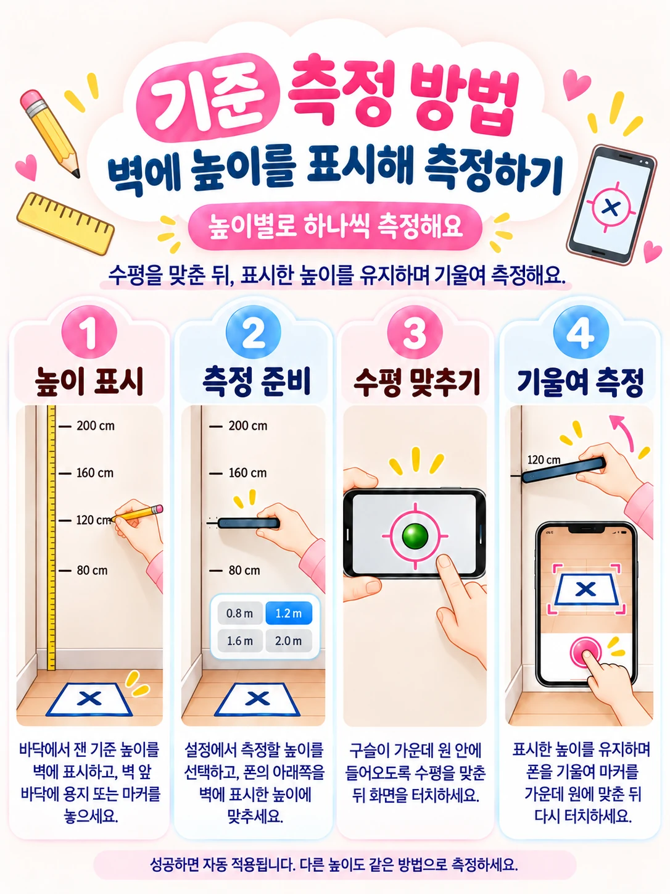

01 / PREPARE
키를 재기 전,
기준부터 맞춰주세요
용지 크기와 휴대폰의 수평 기준, 높이 보정을 준비하면 이후 측정을 같은 조건에서 이어갈 수 있습니다.
1. 측정할 공간과 준비물
- 평평하고 흔들리지 않는 바닥, 눈부신 반사가 적고 충분히 밝은 공간
- 설정에서 선택한 크기의 용지 또는 인쇄한 마커
- 실제 길이를 잴 자·줄자와 높이를 표시할 수 있는 벽
- 카메라 권한을 허용한 휴대폰. 혼자 측정하는 방법에서는 리모컨 등 화면 터치를 대신할 수단
2. 사용할 용지·마커를 설정합니다
더보기 → 설정 → 측정 설정에서 사용할 용지와 마커를 선택합니다. 인쇄한 마커를 사용하면 더 안정적으로 인식할 수 있습니다. 용지는 구겨지거나 휘지 않게 바닥에 평평하게 펴주세요.
인쇄 배율에 따라 마커가 작아지거나 커질 수 있습니다. 크기를 수정할 때는 실제 출력물의 왼쪽·오른쪽 검은 테두리 가운데 선 사이를 가로로, 위·아래 테두리 가운데 선 사이를 세로로 재세요. 용지 전체 크기나 X의 대각선 길이가 아닙니다. 앱에서 선택한 단위(cm 또는 in)로 입력합니다.
3. 수평 원점을 맞춥니다
설정 → 측정 보정 → 수평 원점 맞추기를 엽니다. 휴대폰을 수평인 곳에 놓고 손을 떼어 측정이 끝날 때까지 기다리세요. 카메라 돌출부 때문에 휴대폰이 기울어진다면 책상 모서리 등을 이용해 몸체가 수평이 되도록 놓습니다.
4. 높이를 알고 있는 지점에서 기준측정합니다
바닥에서부터 벽의 높이를 줄자로 정확히 재어 표시합니다. 기본 기준 높이는 80·120·160·200 cm이며, 실제 측정 범위에 맞게 높이를 조정하거나 추가할 수 있습니다.
기준 높이와 마커 위치를 준비합니다
표시한 높이 바로 아래 바닥에 용지나 마커를 놓습니다. 기준측정과 실제 키 측정에서 마커 위치가 최대한 같아야 합니다.
기준측정에서 해당 높이의 측정을 시작합니다
휴대폰 아랫면의 머리 접촉 지점이 표시한 기준 높이에 오도록 맞춥니다.
수평을 맞추고 첫 번째 터치를 합니다
구슬을 가운데 원 안에 넣고 휴대폰이 안정되면 화면을 터치합니다.
접촉 지점을 유지하며 마커를 비춥니다
휴대폰을 기울여 용지나 마커가 십자가 가운데 원에 오도록 맞추고 다시 터치합니다. 성공하면 기준측정 화면으로 돌아옵니다.
다른 높이에서도 반복합니다
서로 다른 높이의 유효한 기준측정이 2개 이상 있어야 보정을 사용할 수 있습니다.
가장 낮은 기준 높이는 측정하려는 최소 키 이하로, 가장 높은 기준 높이는 최대 키 이상으로 잡습니다. 기준 범위를 벗어날수록 오차가 커질 수 있으므로 자주 측정하는 키 주변에도 기준을 추가하세요.

5. 발 앞에 마커를 놓는다면 원거리 마커 보정
마커를 발 앞에서 떨어뜨려 놓는 2번 측정 방법을 사용할 때는 설정에서 원거리 마커 보정도 먼저 완료하세요. 화면의 안내에 따라 실제 사용할 거리와 배치를 맞추고, 측정 때도 그 조건을 유지합니다.
휴대폰을 바꾸거나 보정값을 다른 기기에서 복구했다면, 새 기기에서 수평 원점과 기준측정을 다시 진행하세요.